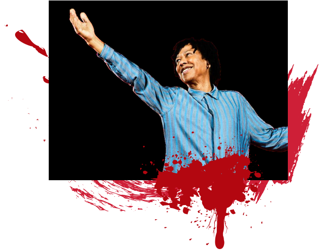

"Djavan é um cantor e compositor brasileiro, conhecido por sua mistura de MPB, jazz e música pop. Com uma carreira que se estende por mais de quatro décadas, ele é amplamente considerado um dos maiores artistas da música brasileira."
ÁLBUM
A VOZ, O VIOLÃO, A MÚSICA DE DJAVAN
1976
O álbum de estreia de Djavan, lançado em 1976, apresenta uma mistura única de MPB e jazz, com letras poéticas e melodias cativantes. Destaques incluem "Flor de Lis" e "E Que Deus Ajude".
VER DISCOGRAFIA
SUCESSO
OCEANO
1989
"Oceano", lançado em 1989, é um dos maiores sucessos de Djavan. A canção é conhecida por sua melodia envolvente e letra romântica, tornando-se um clássico da música brasileira. Quem nunca ouviu um "Você DESÁGUA em mim e eu OCEANO"?
VER MÚSICAS
APROFUNDANDO NO UNIVERSO DE DJAVAN
Djavan Caetano Viana
O início em Maceió: música e futebol.
BIOGRAFIA